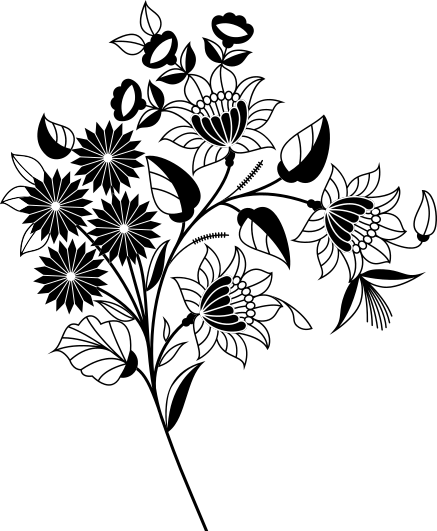
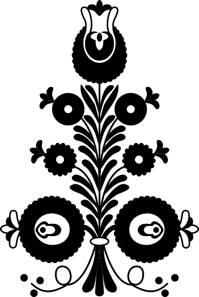
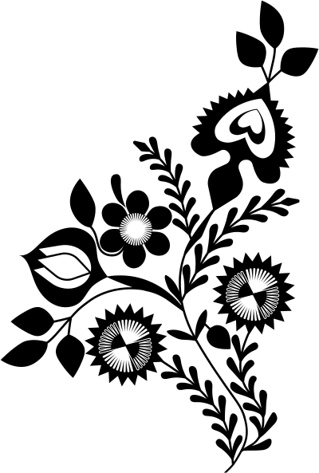
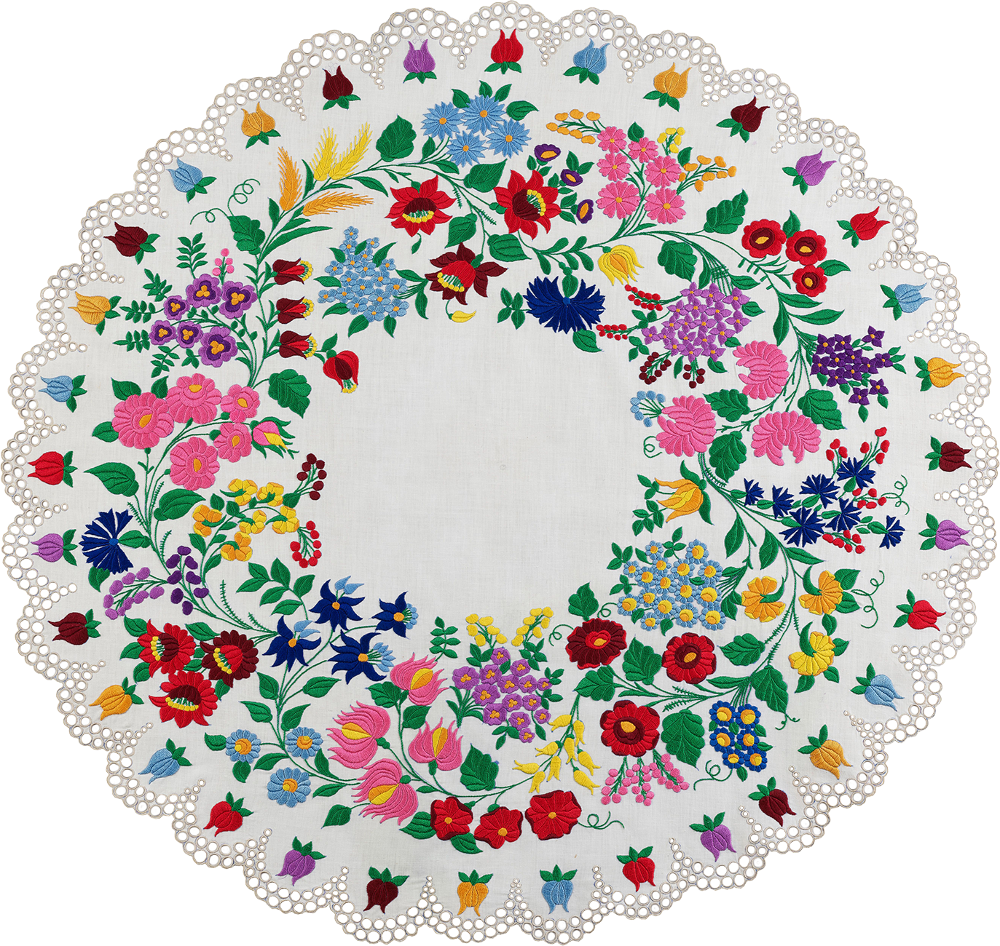
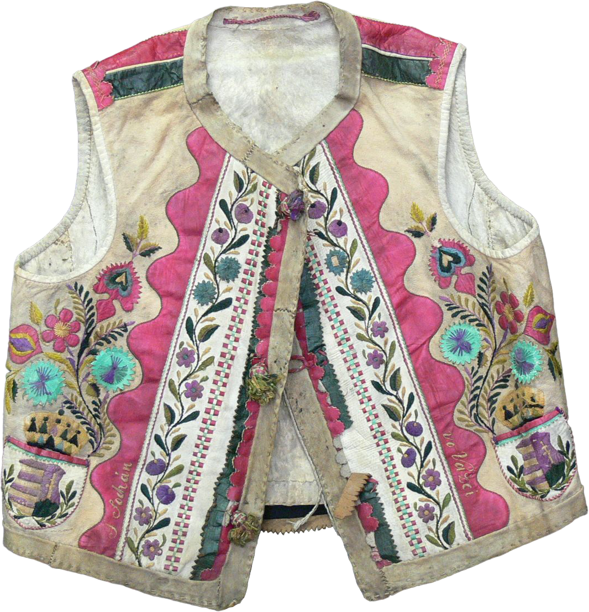
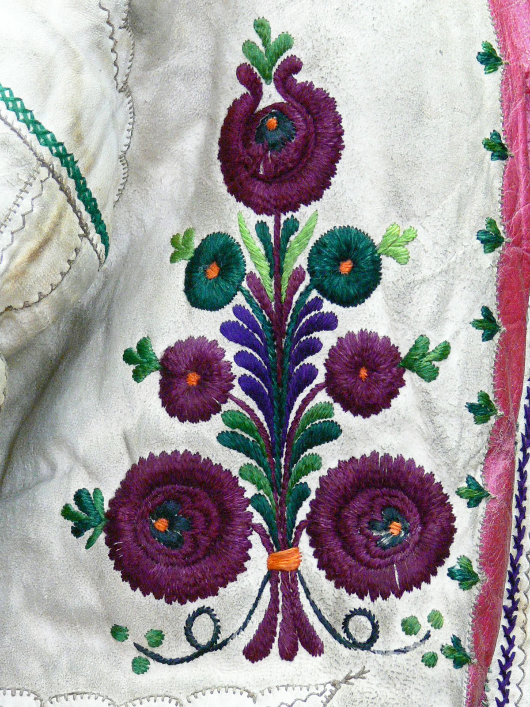
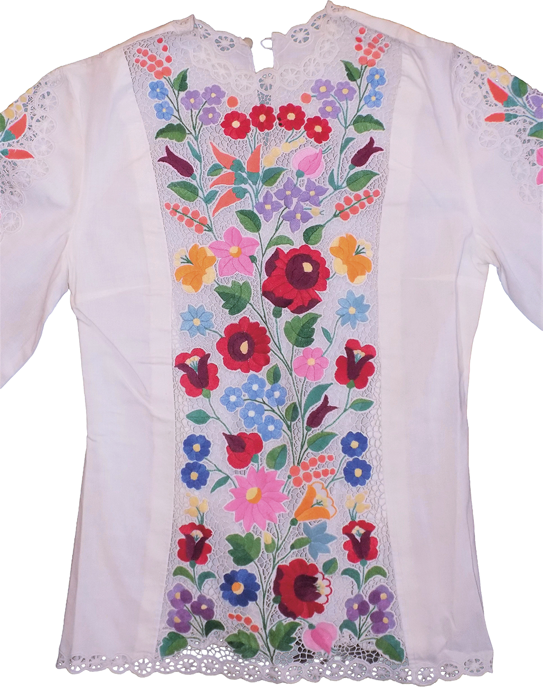

_vektor_04.svg)

Kaszakő tartó tok
tulipános díszítménye
tulipános díszítménye
1890-1900, Kalotaszeg

Ónmázas cserépkanta
virágszálas festett díszítése
virágszálas festett díszítése
1700, Győr

Ónmázas cserépkorsó
rószakompozícióval
rószakompozícióval
1801-1850, Vyškov, Csehország

Téka virágfüzéres
festése
festése
1848, Homoródalmás

Nagy cserépkancsó
virágindás díszítménye
virágindás díszítménye
1815, Maros megye, Románia

Színes gyapjúfonallal hímzett
mintakendő eleme
mintakendő eleme
1873, Nyitra megye

Agyag cseréptál
margaréta és tulipán díszítménnyel
margaréta és tulipán díszítménnyel
19. század második fele, Sárköz

Miskakancsó
búzakalászos díszítése
búzakalászos díszítése
1852, Tiszafüred

Festett ládáról származó
tulipán mintaelem
tulipán mintaelem
1850-1900, Bánffyhunyad

Gyolcs terítő
hímzett virágmintája
hímzett virágmintája
1955, Szakmár

Kézzel szegett, muszlin főkötő
tulipán motívuma
tulipán motívuma
19. század második fele, Sárköz
 copy.png)
Bőrmellény hímzett mintája
növénymotívumokkal
növénymotívumokkal
19. század, Felvidék

Juh szőrös bőréből készült
hímzett ködmön
hímzett ködmön
1894, Átány

Keménycserép tányér
festett növényi motívumokkal
festett növényi motívumokkal
1890-1900, Nagyjécsa

Kalocsai hímzéssel
díszített blúz virágokkal
díszített blúz virágokkal
1980-1985, Besenyőtelek
